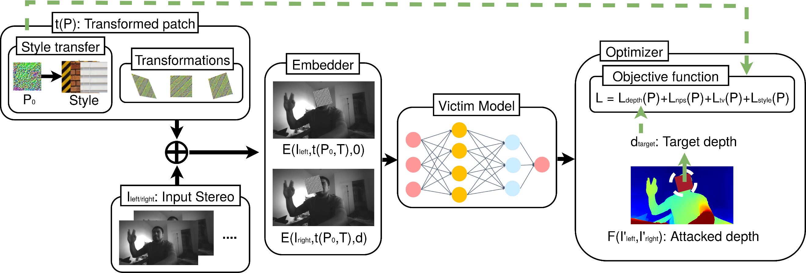

|
Rethinking the Security of AI-assisted UAV Paradigm
With the explosive development of AI techniques in recent years, the AI-assisted UAV paradigm is increasingly drawing research attention in both academia and industry to enhance many UAV activities. However, limited attention has been given to the corresponding security and safety concerns raised by the integration. Specifically, AI models have been shown to be vulnerable to adversarial inputs. If such vulnerabilities are also valid in the context of AI-assisted UAV paradigm, their exploitation by malicious entities can cause severe security and safety issues. consequences. This project aims to study the security of the AI-assisted UAV paradigm by 1) developing a research platform for the secure integration of AI and UAV, 2) performing security analysis on the AI-enabled anomaly detection approaches, and 3) investigating robust AI-assisted UAV operations in adversarial environments.
We are looking for motivated students to join this AI and UAV Security research!
A Simulation Platform for Intelligent UAV Cybersecurity and Reliability Analysis
Unmanned aerial vehicles (UAVs) are increasingly adopted in various applications due to their high mobility and advanced sensing capabilities. However, they also face significant security threats and reliability concerns arising from external adversarial attacks and internal system failures. AI and machine learning techniques have shown promise in detecting security threats and anomalies in UAVs, but their effectiveness heavily depends on high-quality UAV security datasets for training. In this project, we present an open-source simulation platform designed to model diverse UAV security scenarios. Our platform offers flexible customization of attacking effects on major UAV components, including onboard sensors, communication systems, vision modules, and flight control. Additionally, it provides rapid generation and collection of UAV system data under adversarial conditions, facilitating intelligent cybersecurity and reliability analysis. Our experiments successfully simulated over 30 attacking effects toward UAVs, demonstrating our platform’s capability to support extensive UAV security research.
Related Publication, Source Code, and Demos
- Boyin Yang, Yanyan, Li, Ryan Callaghan, Houbing Song, and Jiawei Yuan, “A Simulation Platform for Intelligent UAV Cybersecurity and Reliability Analysis”, In the proceeding of 2025 IEEE International Conference on Unmanned Aircraft Systems (ICUAS), Charlotte, NC, USA, May 2025.
- Source Code and Demos: https://github.com/ai-uavsec/UAViSec
Research on GPS spoofing attack and detection
We studied stealthy GPS spoofing attack against UAV, and successfully demonstrated that UAV could drift away or potentially being taken over under this attack. Specifically, attackers can continuously introduce a small amount of attacking values (wrong GPS position), which is not sensitive enough to trigger the abnormal alarm but gradually affect the position of UAVs by confusing the UAVs to mistakenly apply their built-in position adjustment. We also proposed an effective AI-enabled detection approach using multi-sensor fusion.
Related Publication
- Anthony Finn, Mengjie Jia, Yanyan Li, and Jiawei Yuan “Detecting Stealthy GPS Spoofing Attack Against UAVs Using Onboard Sensors”, In the proceeding of the 17th IEEE International Workshop on Networked Robotics and Communication Systems, Vancouver, Canada, May 2024. (Best Paper Award)
Research on robust UAV tracking in adversarial environments environments
We proposed robust pluggable tracking solutions compatible with various Siamese-based trackers to enhance the performance of UAV tracking systems in adversarial environments. To mitigate the impact of attacks, we develop an input reconstruction module that purifies video frames by effectively eliminating adversarial perturbations and restoring them to their clean versions. The key motivation behind our design is to prevent feature variance and distortion caused by adversarial perturbations from propagating through the tracking pipeline to the prediction stage. To achieve this, our module employs a dual-level optimization strategy that operates at both feature and decision levels. This approach ensures effective mitigation of adversarial perturbations during intermediate feature extraction and final decision-making stages. Consequently, the reconstructed output serves as a robust input for the subsequent tracker, enabling accurate and reliable tracking predictions across diverse and challenging adversarial scenarios. Our reconstruction module is designed as a pluggable input pre-processing stage to be easily integrated into existing tracking systems, making it adaptable to different tracking architectures without modifications.
Demos of UAV Object Tracking under Attacks
Demos of UAV Object Tracking under Attacks with our Solutions
Related Publication
- Mengjie Jia, Yanyan Li, Houbing Herbert Song, and Jiawei Yuan, "A Pluggable Solution For Robust UAV Tracking Against Attacks", in IEEE Internet of Things Journal, 2025.
- Mengjie Jia, Yanyan Li, and Jiawei Yuan, "A Robust UAV Tracking Solution in the Adversarial Environment", In the proceeding of IEEE 36th International Conference on Tools with Artificial Intelligence (ICTAI), Herndon, VA, USA, October 2024.
Robust LLM-driven UAV Control
Recent advances in large Language Models (LLMs) have revolutionized mobile robots, including unmanned aerial vehicles (UAVs), enabling their intelligent operation within Internet of Things (IoT) ecosystems. However, LLMs still face challenges from logical reasoning and complex decision-making, leading to concerns about the reliability of LLM-driven UAV operations in IoT applications. In this project, we propose a closed-loop LLM-driven UAV operation code generation framework that enables reliable UAV operations powered by effective feedback and refinement using two LLM modules, i.e., a Code Generator and an Evaluator. Our framework transforms numerical state observations from UAV operations into semantic trajectory descriptions to enhance the evaluator LLM's understanding of UAV dynamics for precise feedback generation. Our framework also enables a simulation-based refinement process, and hence eliminates the risks to physical UAVs caused by incorrect code execution during the refinement. Extensive experiments on UAV control tasks with different complexities are conducted. The experimental results show that our framework can achieve reliable UAV operations using LLMs, which significantly outperforms baseline methods in terms of success rate and completeness with the increase of task complexity.
Related Publication, Source Code, and Demos
- Wenhao Wang, Yanyan Li, Long Jiao, and Jiawei Yuan, “Large Language Model-driven Closed-loop UAV Operation with Semantic Observations,” arXiv preprint arXiv:2507.01930, 2025.
- Wenhao Wang, Yanyan, Li, Long, Jiao, and Jiawei Yuan, “GSCE: A Prompt Framework with Enhanced Reasoning for Reliable LLM-driven Drone Control”, In the proceeding of 2025 IEEE International Conference on Unmanned Aircraft Systems (ICUAS), Charlotte, NC, USA, May 2025.
- Source Code and Demos: https://github.com/ai-uavsec/CLGSCE
Research on adversarial patch attack and solution

We also had an ongoing research on the adversarial patch attack against UAV stereo camera AI-assisted depth estimation.
This project is supported by the National Science Foundation CISE Research Expansion Program (MSI).